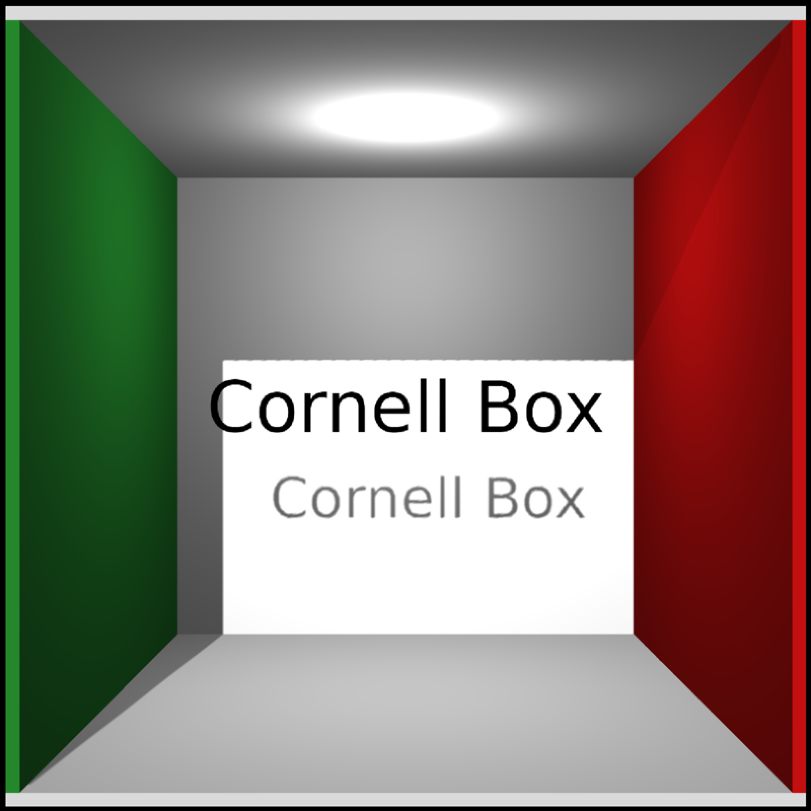
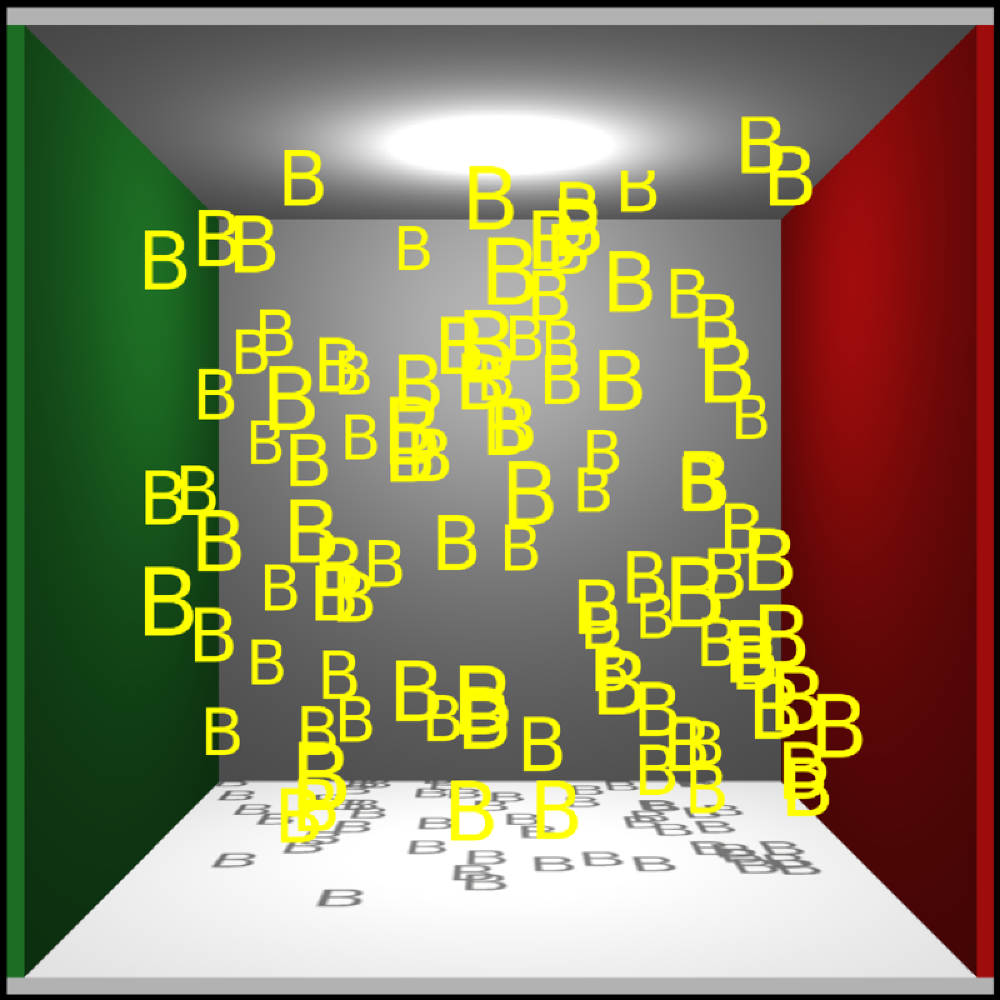

Text Object
Text string.
Default c(0,0,0). Position of the mesh.
Default 1. Height of the text.
Default xy. Orientation of the plane. Other options are yz and xz.
Default black. Text color.
Default c(0,0,0). Angle to rotate the mesh.
Default c(0,0,0). Point around which to rotate the mesh.
Default c(1,2,3). Order to rotate the axes.
Default c(1,1,1). Scale of the mesh. Can also be a single numeric value scaling all axes uniformly.
List describing the mesh.
if(rayvertex:::run_documentation()) {
#Generate a label in the Cornell box.
generate_cornell_mesh() |>
add_shape(text3d_mesh(label="Cornell Box", position=c(555/2,555/2,555/2),angle=c(0,180,0),
text_height=60)) |>
rasterize_scene(light_info = directional_light(c(0.1,0.4,-1)))
}
#> Setting default values for Cornell box: lookfrom `c(278,278,-800)` lookat `c(278,278,0)` fov `40` .

if(rayvertex:::run_documentation()) {
#Change the orientation
generate_cornell_mesh() |>
add_shape(text3d_mesh(label="YZ Plane", position=c(540,555/2,555/2),text_height=100,
orientation = "yz",angle=c(0,180,0))) |>
add_shape(text3d_mesh(label="XY Plane", position=c(555/2,555/2,540),text_height=100,
orientation = "xy", angle=c(0,180,0))) |>
add_shape(text3d_mesh(label="XZ Plane", position=c(555/2,15,555/2),text_height=100,
orientation = "xz", angle=c(0,0,0))) |>
rasterize_scene(light_info = directional_light(c(0.1,0.4,-1)))
}
#> Setting default values for Cornell box: lookfrom `c(278,278,-800)` lookat `c(278,278,0)` fov `40` .
if(rayvertex:::run_documentation()) {
#Add an label in front of a sphere
generate_cornell_mesh() |>
add_shape(text3d_mesh(label="Cornell Box", position=c(555/2,555/2,555/2),text_height=60,
color="grey20",angle=c(0,180,0))) |>
add_shape(text3d_mesh(label="Sphere", position=c(555/2,100,100),text_height=30,
color="white",angle=c(0,180,0))) |>
add_shape(sphere_mesh(radius=100,position=c(555/2,100,555/2),
material=material_list(diffuse="purple",type="phong"))) |>
rasterize_scene(light_info = directional_light(c(0.1,0.4,-1)))
}
#> Setting default values for Cornell box: lookfrom `c(278,278,-800)` lookat `c(278,278,0)` fov `40` .
if(rayvertex:::run_documentation()) {
#A room full of bees
bee_scene = list()
for(i in 1:100) {
bee_scene = add_shape(bee_scene, text3d_mesh("B", position=c(20+runif(3)*525),
color="yellow", text_height = 50,
angle=c(0,180,0)))
}
generate_cornell_mesh() |>
add_shape(bee_scene) |>
rasterize_scene(light=directional_light(c(0,1,-1)))
}
#> Setting default values for Cornell box: lookfrom `c(278,278,-800)` lookat `c(278,278,0)` fov `40` .
